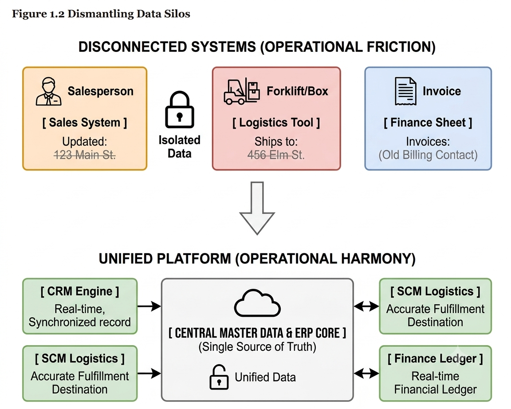
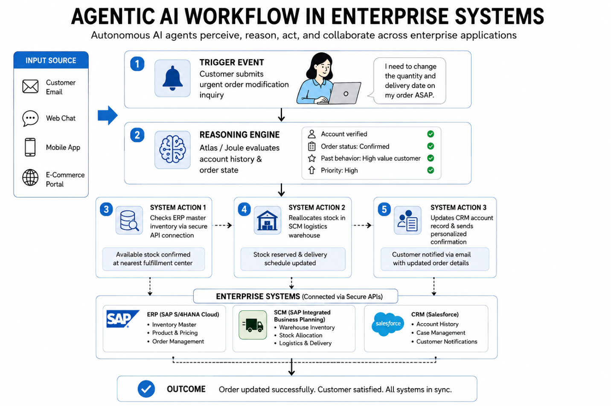

2.5 Enterprise Systems: The Digital Backbone of Modern Business
The $100 Million Halloween Nightmare: Why Enterprise Systems Matter
In October 1999, executives at Hershey Foods faced a nightmare scenario that had nothing to do with goblins or ghouls1. Warehouses across Pennsylvania were filled to the brim with $100 million worth of Reese’s Peanut Butter Cups, Hershey’s Kisses, and Jolly Ranchers, yet store shelves across North America were empty1. Halloween—the single most profitable selling season of the year for a confectioner—was days away, and Hershey could not ship its products to retailers1.
The company had not suffered a factory fire, a strike, or a cocoa bean shortage. Instead, Hershey had stumbled during the rollout of a massive enterprise software transformation1. To meet a self-imposed Y2K deadline, project leaders compressed a four-year implementation into 30 months, skipped critical testing phases, and switched on three complex systems simultaneously right before peak order season1. The order-processing workflow collapsed. Orders entered into the sales software failed to transmit to warehouse fulfillment systems1. The candy was sitting right there on the warehouse floor, but nobody knew which truck to load or where to send it1.
By the time the dust settled, Hershey had missed $100 million in shipments, its quarterly profits had plummeted by 19%, and its stock price had taken an 8% dive1. Hershey’s operational paralysis demonstrated a reality that every business leader must grasp: modern enterprise applications are not mere back-office utility software1. They are the operational circulatory system of the firm4. When functioning smoothly, they allow companies like Zara to deliver high-fashion apparel from design boards to retail shelves in 15 days6, and enable Starbucks to turn a mobile app into a customer retention engine generating over half of its domestic revenue8. But when mismanaged, enterprise systems can stall operations, alienate partners, and erase hundreds of millions of dollars in corporate value overnight1.
Core Concepts: Demystifying ERP, CRM, and SCM
When a business is small, managing operational data is straightforward. A boutique bakery can track recipes in a binder, record customer preferences on a notepad, monitor flour inventory on a whiteboard, and track revenue using basic accounting software. However, as an enterprise grows to encompass hundreds of locations, thousands of employees, complex global supply chains, and millions of customer transactions, relying on disconnected systems leads to operational chaos5.
Enterprise systems are large-scale, integrated software suites designed to centralize and standardize data flows, business rules, and transactional workflows across an entire organization and its external partner network4. Rather than permitting separate business units to operate isolated tools, enterprise systems connect functional areas into a shared digital framework5.
Modern enterprise software rests on three primary operational pillars:
Enterprise Resource Planning (ERP)
The central software backbone of the firm is Enterprise Resource Planning (ERP). An ERP platform manages core back-office operational processes, including general ledger accounting, financial control, human capital management (HCM), procurement, inventory, asset tracking, and production planning and coordination. Its defining feature is integration: when a sales order is entered, the ERP can update inventory, post financial entries, calculate tax liabilities, and trigger replenishment or production actions across the firm.
Customer Relationship Management (CRM)
While ERP software handles internal back-office execution, Customer Relationship Management (CRM) software powers front-office revenue creation11. CRM systems manage every touchpoint across the customer lifecycle—from initial lead capture and sales pipeline tracking to marketing campaigns, e-commerce storefronts, and customer support ticket routing11. By consolidating customer interaction histories into a shared profile, CRM systems allow sales reps, account executives, and support agents to view a single, complete account context11.
Supply Chain Management (SCM)
Corporate supply chains extend beyond the physical boundaries of a single firm6. Supply Chain Management (SCM) systems plan, coordinate, and optimize the movement of raw materials, work-in-progress inventory, finished products, and logistics information across a network of suppliers, manufacturers, distributors, and retail points of sale6. SCM platforms handle demand forecasting, inventory placement, procurement scheduling, warehouse operations, and transport routing10. By sharing real-time demand and inventory data across corporate boundaries, SCM platforms help prevent stockouts, reduce excess working capital tied up in safety stock, and shorten fulfillment cycles7.
| Enterprise System Pillar | Primary Strategic Purpose | Key Internal & External Users | Core Managed Business Processes | Representative Software Leaders |
|---|---|---|---|---|
| Enterprise Resource Planning (ERP) | Back-office efficiency, transactional control, and real-time financial visibility | Finance teams, accountants, HR staff, operations managers, executive leaders | General ledger accounting, payroll, procurement, order fulfillment, cost allocation, production planning | SAP, odoo, Oracle NetSuite, Workday, Microsoft Dynamics 365 |
| Customer Relationship Management (CRM) | Front-office revenue growth, sales pipeline management, and customer retention | Sales representatives, call center agents, service teams, marketing specialists | Lead tracking, opportunity management, sales forecasting, customer service, and marketing campaigns | Salesforce, HubSpot, Oracle CX, Microsoft Dynamics CRM |
| Supply Chain Management (SCM) | Cross-enterprise coordination of materials, inventory, logistics, and delivery | Procurement teams, logistics managers, warehouse operators, suppliers, carriers | Demand forecasting, purchasing, warehouse operations, transport routing, and fulfillment | SAP, Oracle SCM, Blue Yonder, Manhattan Associates |
Breaking Silos, Building SSOT, and Constructing Switching Costs
Managers should not evaluate enterprise software based on technical feature sets4. What matters is business value: operational efficiency, organizational defensibility, and strategic agility5.
Dismantling Data Silos and Building a Single Source of Truth
Without integrated enterprise platforms, growing organizations fall prey to data silos—isolated applications, departmental databases, or uncoordinated spreadsheets that store disconnected business records5. Data silos create operational friction5. A salesperson might record a customer's address update in a CRM tool, while the shipping department relies on an older address in a logistics database, and finance invoices an outdated billing contact stored in an accounting spreadsheet5.
Figure 2.5aDismantling Data Silos

Source: Author-created adaptation.
Show long description
The diagram is split into two stacked sections comparing isolated data silos with an integrated single source of truth (SSOT) system.
- Top Section — Fragmented Data Silos (Operational Friction): Shows three standalone, unconnected boxes representing departmental systems operating in isolation.
- Sales System: Updates customer records in isolation.
- Logistics Tool: Relies on disconnected data, resulting in shipments sent to outdated warehouse addresses.
- Finance Sheet: Relies on isolated spreadsheets, resulting in invoices sent to wrong billing contacts.
- Middle Transition: A downward arrow connects the top section to the bottom section, illustrating the move from isolated silos to enterprise integration.
- Bottom Section — Unified Single Source of Truth (Operational Harmony): Features a central hub labeled Central Master Data / ERP Core, which acts as the Single Source of Truth. Surrounding boxes connect bidirectionally to this central engine:
- CRM Engine: Receives synchronized, real-time customer records.
- SCM Logistics: Receives accurate fulfillment destination data.
- ERP / Finance Ledger: Maintains a live, real-time financial ledger.
Enterprise systems dismantle these silos by establishing a Single Source of Truth (SSOT)9. An SSOT ensures that key master data—such as customer records, product catalog specifications, vendor pricing agreements, and live inventory balances—is defined once, governed centrally, and made universally accessible across all applications9. When a store sells an item, the inventory record updates across the entire firm in real time, preventing e-commerce platforms from selling items that are already out of stock on physical shelves13.
Enterprise Systems as Strategic Moats: Switching Costs
From a strategy perspective, enterprise systems are powerful tools for building high switching costs17. When a business embeds its core operations within an enterprise platform like SAP or Salesforce, every business process, employee habit, data structure, and third-party software integration becomes tied to that ecosystem17. Replacing an enterprise system requires millions of dollars in capital expenditure, extensive workflow redesign, and significant operational risk16. Consequently, once an enterprise software platform is entrenched, client retention rates remain exceptionally high, providing software vendors with predictable subscription revenues while giving customer firms an integrated operational moat16.
The Manager’s Dilemma: Standardize the Business or Customize the Software?
When deploying enterprise platforms, executives face a pivotal choice: Should the organization adapt its business processes to fit the standardized best practices built into the software, or should it customize the software to preserve existing habits? The logic of enterprise systems is standardization. These platforms work best when firms align their processes with a common design, reducing complexity, improving integration, and making upgrades easier over time. By contrast, heavy customization often creates technical debt, inflates project costs, and makes future upgrades much harder.
History offers a clear warning. Global discount retailer Lidl reportedly spent seven years and €500 million trying to modify SAP software to accommodate an unusual inventory valuation method before abandoning the effort in 2018. The strategic lesson is straightforward: managers usually gain more by standardizing organizational processes around the software than by spending millions trying to bend the software around legacy practices.
A company may be tempted to customize enterprise software when its existing business processes are viewed as too important or distinctive to change. Managers may believe that the software should accommodate established practices rather than forcing the organization to adopt standardized processes. Customization can also appear attractive because it minimizes disruption to employees and allows the company to preserve familiar workflows.
However, this creates a fundamental trade-off. Customization preserves existing processes, but standardization reduces complexity and improves long-term integration and maintainability. The managerial challenge is therefore to determine whether an existing process provides genuine strategic value or is simply an established organizational habit.
Understanding Total Cost of Ownership (TCO)
Smart business leaders look beyond the initial purchase price or monthly subscription fees when evaluating enterprise platforms. The software license or cloud subscription fee typically accounts for only 30% to 40% of the true Total Cost of Ownership (TCO)18. The remaining 60% to 70% is absorbed by system implementation, data cleansing, legacy data migration, third-party integration, user training, process reengineering, and ongoing data governance18. Underestimating these organizational costs remains a leading cause of enterprise project overruns2.
Enterprise Systems as Sociotechnical Systems
An enterprise system is more than software. It is part of a broader sociotechnical system that includes technology, people, processes, organizational structures, data, policies, and incentives.
This helps explain why enterprise-system implementations can be difficult. Installing capable software does not guarantee better performance. Employees may resist new procedures, departments may disagree about processes, incentives may conflict with organizational goals, or poor-quality data may undermine the system.
Successful implementation therefore requires managers to consider the entire organizational system, not just the technology.
How It Works in Practice: Architectures, Workflows, and Cloud Migration
Historically, enterprise platforms were installed as monolithic on-premises applications running on physical servers inside corporate data centers4. These traditional deployments required upfront capital investments, dedicated IT teams, and complex, multi-year upgrade cycles4.
Over the past decade, the enterprise software industry has shifted toward cloud-native architectures delivered as Software as a Service (SaaS)4. In a cloud SaaS model, the software vendor hosts the application infrastructure in hyperscaler data centers, managing system maintenance, data security patches, and functional upgrades4. Today, cloud deployments account for over 58% of the global ERP market and represent more than 75% of new enterprise contract deal volume10.
To allow modular enterprise applications to share data seamlessly without fragile, custom-coded connections, modern architectures rely heavily on Application Programming Interfaces (APIs)5. An API serves as a digital contract that enables distinct applications—such as a specialized e-commerce storefront, a third-party logistics platform, and a central financial core—to exchange structured data securely in real time5. The Artificial Intelligence Frontier: Agentic AI and Data Grounding
Enterprise software is undergoing its most significant structural transformation since the shift to the cloud: the rise of agentic AI11. Early AI integrations were primarily descriptive or predictive—offering static dashboards or forecasting sales trends14. In contrast, autonomous AI agents perceive operational events, reason through complex business workflows, execute multi-step transactions across systems, and collaborate with human teams with minimal oversight12.
Major enterprise platform providers have embedded agentic capabilities directly into their operational suites:
- Salesforce Agentforce: Operating via its Atlas reasoning engine, Agentforce deploys autonomous agents across sales, customer service, and marketing modules11. Instead of following rigid decision trees, an Agentforce agent can evaluate an incoming customer email, review historical purchasing context in the CRM, check inventory levels in the ERP via APIs, initiate a replacement order, issue a credit memo, and notify the customer—all without requiring human intervention11.
- SAP Joule: Integrated natively across SAP’s cloud ERP suite, Joule coordinates teams of specialized AI agents through an intent-driven interface known as Joule Work17. Joule agents monitor global supply chains, detect shipment bottlenecks, automate accounts payable reconciliations, and handle internal HR transactions17. Global fashion retailer LC Waikiki reduced internal HR processing times by 40% to 60% after deploying Joule conversational agents19.
Figure 2.5b Agentic Workflow– Example

Source: Author-created adaptation.
Show long description
The figure is a white-background enterprise infographic titled “AGENTIC AI WORKFLOW IN ENTERPRISE SYSTEMS.” A subtitle beneath the title explains that autonomous AI agents perceive, reason, act, and collaborate across enterprise applications. The diagram presents a left-to-right and top-to-bottom workflow showing how an urgent customer order-change request moves through an AI-enabled enterprise system.
On the left side, a vertical “Input Source” panel lists four channels: Customer Email, Web Chat, Mobile App, and E-Commerce Portal. An arrow points from these input sources into the main workflow. The first step is a “Trigger Event,” shown as a customer submitting an urgent order modification inquiry. A speech bubble indicates the customer message: they want to change the quantity and delivery date on an order as soon as possible. The second step is a “Reasoning Engine,” labeled as Atlas / Joule, which evaluates account history and order state. Inside this step, a checklist shows that the account is verified, the order status is confirmed, past behavior indicates a high-value customer, and the priority is high.
The workflow then splits into three connected system actions. Step 3 checks ERP master inventory through a secure API connection and confirms that stock is available at the nearest fulfillment center. Step 4 reallocates stock in the SCM logistics warehouse and updates the delivery schedule. Step 5 updates the CRM account record and sends a personalized confirmation, notifying the customer by email with the updated order details. These steps are connected with arrows to show the sequence of actions and the flow of information between systems.
Below the actions, a section labeled “Enterprise Systems (Connected via Secure APIs)” shows three platform blocks: ERP (SAP S/4HANA Cloud), SCM (SAP Integrated Business Planning), and CRM (Salesforce). Each block lists example functions such as inventory master, product and pricing, order management, warehouse inventory, stock allocation, logistics and delivery, account history, case management, and customer notifications. The workflow ends with a final outcome bar stating that the order was updated successfully, the customer is satisfied, and all systems are in sync. The overall visual message is that agentic AI can coordinate multiple enterprise systems in real time to complete a customer request with speed, accuracy, and minimal human intervention.
The Imperative of Data Grounding
The effectiveness of an autonomous AI agent is directly bounded by the quality of the underlying corporate data11. If an agent acts on fragmented, inaccurate, or duplicate records, it will make flawed decisions at automated speed12. Effective deployment requires data grounding—connecting AI reasoning engines directly to unified master data platforms like Salesforce Data Cloud or SAP DataSphere11. Data grounding ensures that autonomous agents evaluate queries using real-time operational records while operating strictly within enterprise governance rules11.
Key Terms and Definitions
- Agentic AI
- An advanced architecture of artificial intelligence capable of evaluating operational context, planning multi-step actions, and executing transactions across enterprise systems with minimal human oversight12.
- Application Programming Interface (API)
- A standardized technical interface that allows separate software applications to exchange data and execute programmatic functions in real time5.
- Customer Relationship Management (CRM)
- An enterprise software pillar focused on consolidating front-office sales pipeline tracking, marketing automation, digital commerce, and customer support8.
- Data Grounding
- The operational practice of linking AI reasoning engines to verified enterprise master data platforms to ensure accurate, context-aware automated decisions11.
- Data Silo
- An isolated operational application or database maintained by a single department that functions without integration into the broader enterprise software network5.
- Enterprise Resource Planning (ERP)
- An integrated software backbone that centralizes core back-office processes, including financial accounting, general ledger control, procurement, and human capital management4.
- Enterprise Systems
- Comprehensive software suites designed to standardize data flows and integrate core business processes across functional departments and extended business networks4.
- Integration
- The coordination of separate activities, departments, or systems so they work together as a connected whole. In an information systems context, it means data and processes flow smoothly across the firm, so one part of the business can trigger, inform, or update another part without manual reentry or delay.
- Operational Friction
- delays, errors, and extra manual work that occur when business processes and systems are not well integrated.
- Pull System
- A supply chain operational strategy where manufacturing and inventory replenishment are driven by real-time customer demand signals rather than long-term forecasts15.
- Single Source of Truth (SSOT)
- A centralized master data structure that ensures business entities exist in a standardized, authoritative state accessible across all applications9.
- Standardization
- The use of common rules, processes, formats, or system designs across an organization (for example, the same process to hire employees whether they are hired in the US, or in Mexico, or in Canada). In enterprise systems, it means different departments follow the same procedures and data structures so the software can integrate work more easily, reduce errors, and support consistent operations.
- Supply Chain Management (SCM)
- Software systems designed to plan, coordinate, and optimize the movement of goods, materials, information, and capital across multi-firm supplier networks6.
- Switching Costs
- The economic, structural, and operational hurdles incurred by a firm when transitioning from an established vendor or technology platform to a competitor17.
- Total Cost of Ownership (TCO)
- A financial metric capturing all direct and indirect expenses incurred throughout the lifecycle of a technology platform, including software, implementation, data cleansing, and training4.
Footnotes
- ERP Implementation Failure Case Studies, Stories & Examples, https://www.erpresearch.com/en-us/erp-implementation-failure-case-studies
- Why ERP Implementations Fail: Lessons from Hershey's - Pemeco Consulting, https://pemeco.com/a-case-study-on-hersheys-erp-implementation-failure-the-importance-of-testing-and-scheduling/
- The Biggest ERP Failures of All Time - Third Stage Consulting Group, https://www.thirdstage-consulting.com/blog/the-biggest-erp-failures-of-all-time/
- Cloud ERP Market Report 2024-2029, by Applications, Geo, Tech - MarketsandMarkets, https://www.marketsandmarkets.com/Market-Reports/cloud-erp-market-190169866.html
- System Integration: Break Down Data Silos & Cut Costs - 2N, https://www.2n.pl/blog/system-integration-break-down-data-silos-cut-costs
- Agile Supply Chain Zara Case Study Analysis - Scribd, https://www.scribd.com/doc/135971287/Agile-Supply-Chain-Zara-Case-Study-Analysis
- Top 10: Agile Supply Chains, https://supplychaindigital.com/top10/top-10-agile-supply-chains
- Starbucks Rewards Program: A Complete Breakdown - Rivo, https://www.rivo.io/blog/starbucks-rewards-program
- Why Your Business Needs a Single Source of Truth for Better Data Management, https://dataladder.com/why-your-business-needs-single-source-of-truth-for-better-data-management/
- US Enterprise Resource Planning (ERP) Market Outlook to 2030 - Alora Advisory, https://aloraadvisory.com/insights/us-enterprise-resource-planning-erp-market-outlook-to-2030
- Salesforce Agentforce Guide 2026: Products, AI Agents & Use Cases - Vantage Point, https://vantagepoint.io/blog/sf/the-complete-guide-to-salesforces-agentforce-ecosystem-understanding-the-full-product-portfolio-in-2026
- Best Enterprise AI Agents in 2026 (Top-Rated Solutions Reviewed & Compared) - Noxus, https://www.noxus.ai/roundups/best-enterprise-ai-agents
- SSOT Explained: The Ultimate Guide to Implementing a Single Source of Truth - Workday, https://www.workday.com/en-us/topics/erp/ssot.html
- How to Build a Unified Customer View: Lessons from Starbucks - Lean Solutions Group, https://www.leangroup.com/resources/how-to-build-a-unified-customer-view-lessons-from-starbucks
- Zara's Fashion Retail Supply Chain Strategies, https://www.supplychain247.com/article/zaras_fashion_retail_supply_chain_strategies
- Enterprise Resource Planning Market Size,Share, Trends | 2035 - Market Research Future, https://www.marketresearchfuture.com/reports/enterprise-resource-planning-market-42360
- SAP Joule AI vs Salesforce Einstein vs Microsoft Copilot | Enterprise AI Comparison 2026, https://www.savictech.com/insights/sap-joule-ai-vs-competitors-enterprise-ai-platform-comparison-2026/
- Single Source of Truth: Why Your SSOT Initiative Will Fail (And How to Prevent It) - Reply, https://www.reply.com/valorem-reply/en/resources/insights/blog/azure/single-source-of-truth-why-your-ssot-initiative-will-fail-and-how-to-prevent-it
- SAP Business AI: Release Highlights Q2 2026, https://news.sap.com/2026/07/sap-business-ai-release-highlights-q2-2026/